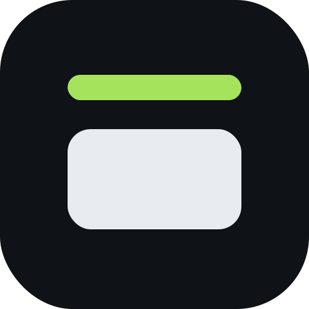
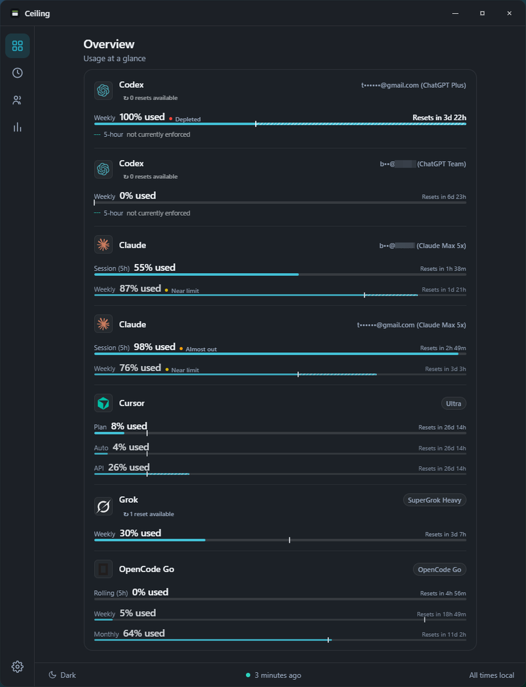
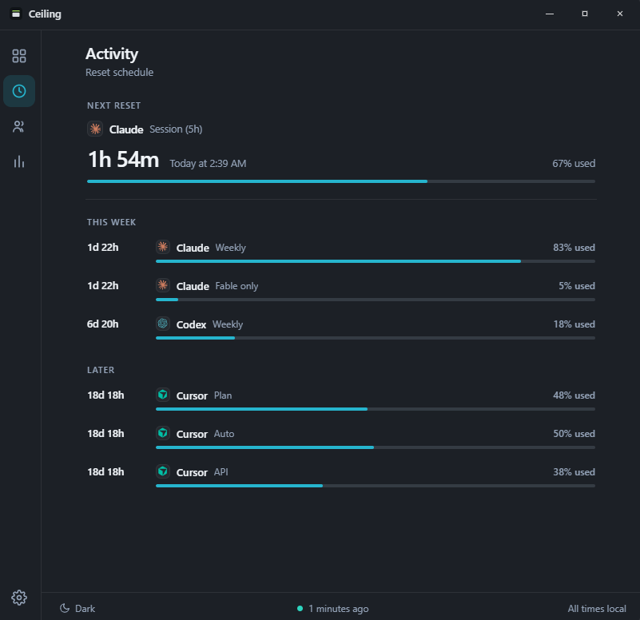
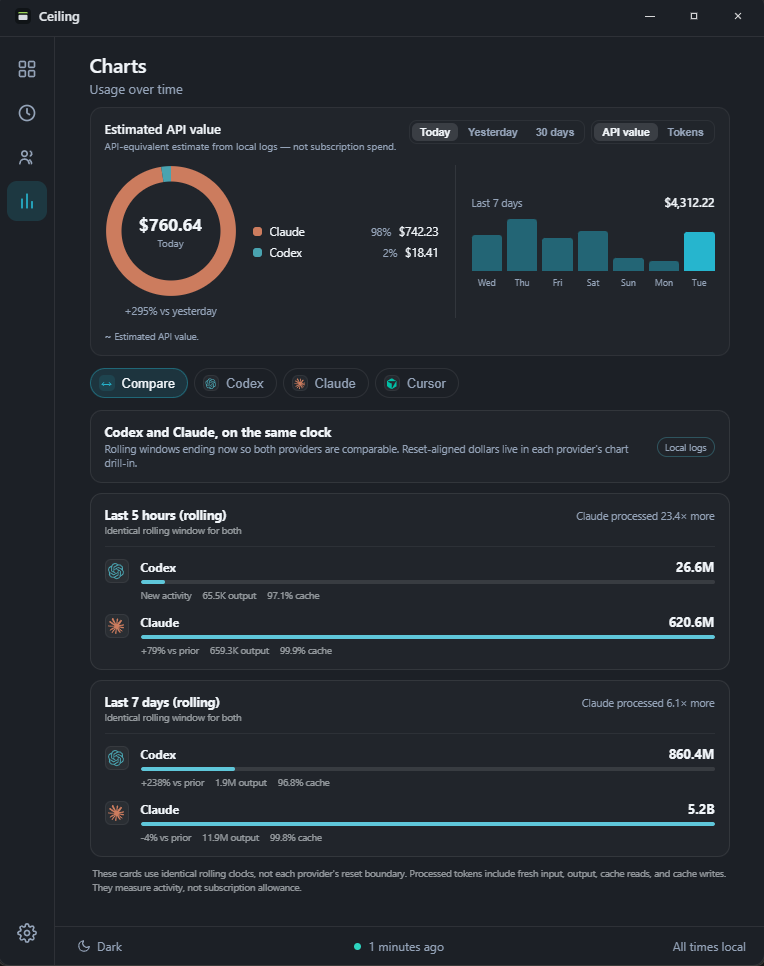
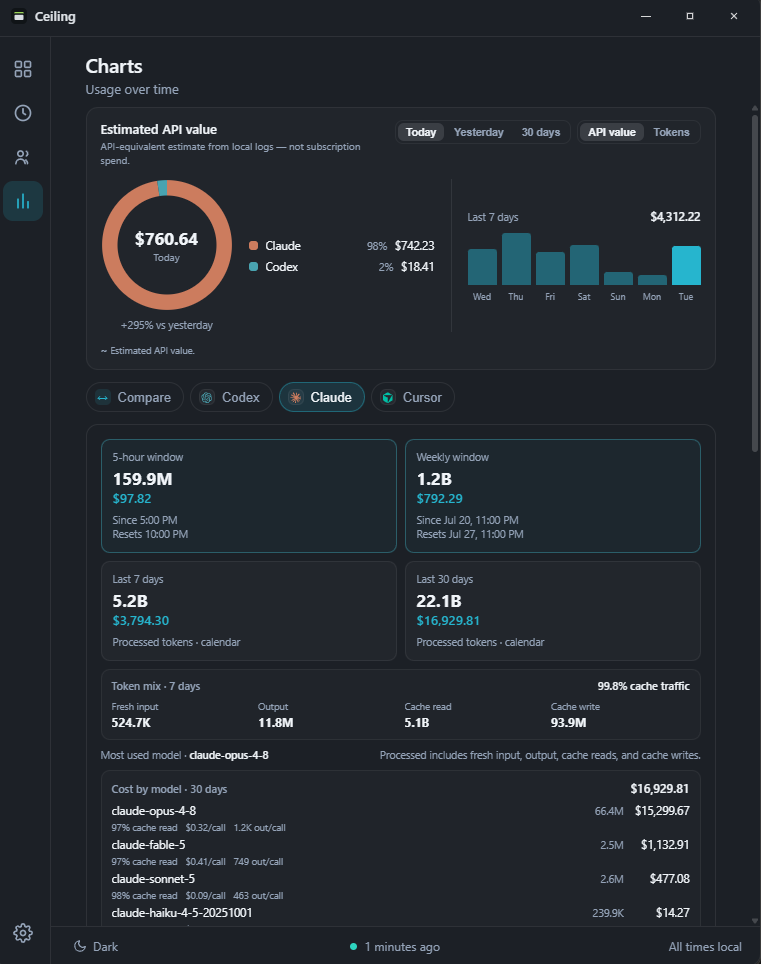

Usage at a glance
See remaining capacity and reset times for the AI plans you use, all in one calm Windows view.

Reset schedule
Know which limit resets next, what is coming later, and how much of each window you have used.

Compare
Compare Codex and Claude across identical rolling windows using local session history.

Local history
Explore tokens and estimated API-equivalent value by window, model, reasoning effort, and project.

AI capacity, reset times, alerts,and local usage history for Windows.